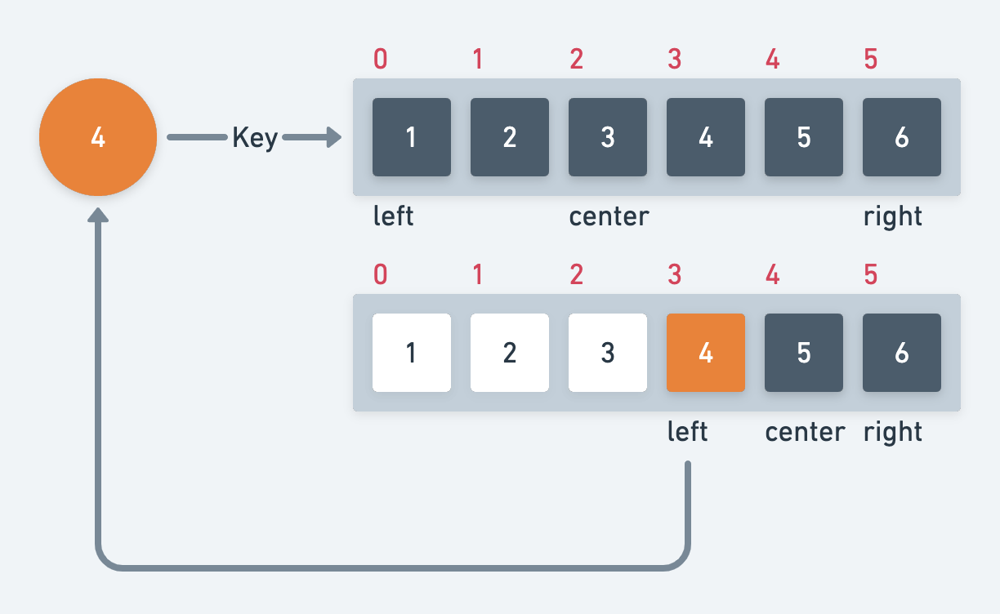

선형검색
배열에서 원하는 키 값 요소를 만날 때까지 순서대로 요소 검색, 값을 찾지 못하고 배열을 모두 순회하거나 값을 찾는다면 바로 종료한다.
1function linearSearch(key, arr) {
2 for (let index = 0; index < arr.length; index++) {
3 if (key === arr[index]) {
4 return true
5 }
6 }
7 return false;
8}
9
10linearSearch(2811, [2, 15, 24, 28, 304, 16, 7, 1]); //false
11linearSearch(16, [2, 15, 24, 28, 304, 16, 7, 1]); //true
이진검색

이미 정렬되어 있는 배열(전제 조건)에서 범위를 좁혀가며 값을 찾는 탐색법 선형 탐색보다 속도가 빠르긴하지만 정렬되어 있는 리스트에 적용할 수 있다.
left = 탐색 시작 위치, center = 팀색 중앙 위치((n-1) / 2), right = 탐색 끝 위치 (n-1)로 초기화하여 점차적으로 좁혀나간다.
정렬된 배열이라는 전제 조건이 붙기는 하지만, 선형 검색보다 순회 횟수가 크게 줄어 성능적으로 더 효율적이다.
- 중앙 요소가 찾는 Key보다 작을 때 기존 (center + 1) ~ right 까지 탐색 범위를 좁힌다.
- 중앙 요소가 찾는 Key보다 클 때 left ~ (center - 1) 까지 탐색 범위를 좁힌다.
1function binarySearch(key, array) {
2 let count = 0;
3 let left = 0;
4 let right = array.length - 1;
5
6 while (left <= right) {
7 let center = Math.floor((left + right) / 2);
8 const item = array[center];
9 count += 1;
10 if (item === key) {
11 console.log("true, " + count);
12 return true;
13 } else if (item < key) {
14 left = center + 1;
15 } else {
16 right = center - 1;
17 }
18 }
19 console.log("false, " + count);
20 return false;
21}
22
23binarySearch(10, [1, 2, 3, 4, 5, 6, 7, 8, 9]); //false, 4
24binarySearch(8, [1, 2, 3, 4, 5, 6, 7, 8, 9]); //true, 3
참고자료
- 자료구조와 함께 배우는 알고리즘 입문 - 검색 알고리즘 (Bohyoh Shibata 저)